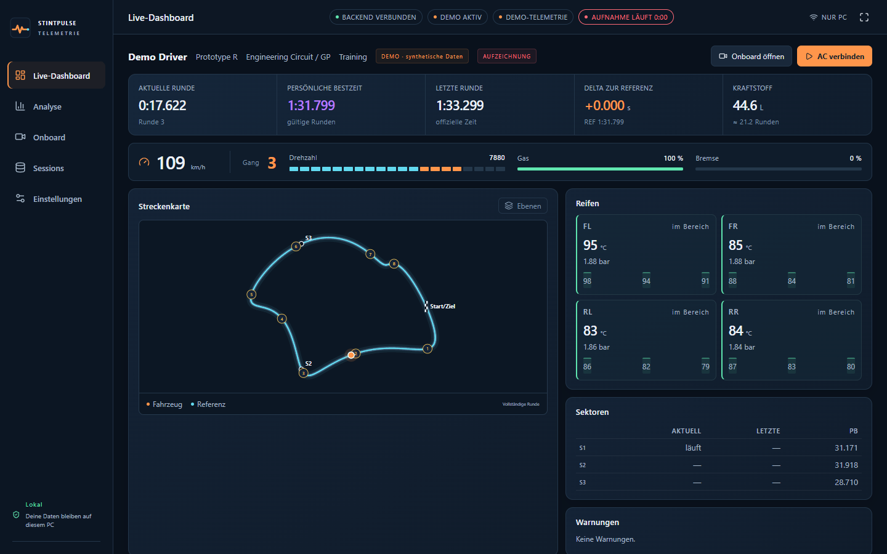
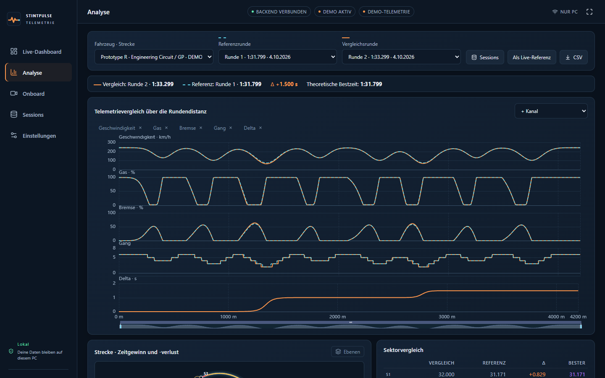
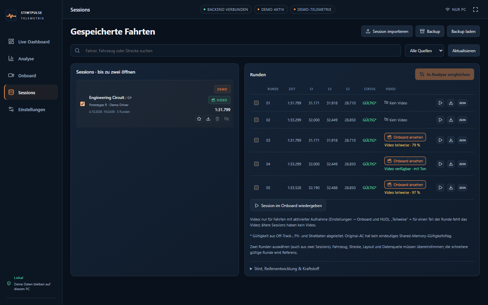

Deine Stints.
Jede Runde verstanden.
Kostenlose Telemetrie, Rundenanalyse und Onboard-Video mit Ton für das originale Assetto Corsa – live im Browser und auf dem Handy. Alles bleibt auf deinem PC.
Windows 10/11 · 64 Bit · kostenlos · Version 0.1.0

Was StintPulse kann
Live-Dashboard
Rundenzeit, Delta, Sektoren, Gang, Pedale, Reifentemperaturen und -drücke, Kraftstoff und Streckenkarte in Echtzeit.
Automatische Runden
Jede Runde mit offiziellen Sektorzeiten wird gespeichert – inklusive Gültigkeit, Outlaps und theoretischer Bestzeit.
Analyse über die Distanz
Zwei Runden Meter für Meter vergleichen: Speed, Gas, Bremse, Gang und Delta, dazu Zeitgewinn auf der Karte.
Onboard mit Zeiten-HUD
Dein OBS-Bild live mit Rundenzeit-Einblendung im TV-Stil – auf dem PC und auf dem Handy.
Aufnahme mit Ton
Video und Spielsound werden mit aufgenommen. Später jede Runde einzeln ansehen – HUD aus den gespeicherten Daten, synchron.
Lokal & privat
Kein Konto, keine Cloud, kein Upload. Nur ein optionaler Update-Hinweis fragt bei GitHub nach neuen Versionen.
Einblicke


In zwei Minuten startklar
- StintPulse-0.1.0-Setup.exe herunterladen und starten (keine Administratorrechte nötig).
- Warnt Windows („Der Computer wurde durch Windows geschützt“): Weitere Informationen → Trotzdem ausführen. Das Programm ist noch nicht digital signiert.
- StintPulse öffnet das Dashboard im Browser. Das schwarze Fenster während der Fahrt offen lassen.
- Assetto Corsa starten (auch über Content Manager) und auf die Strecke gehen – fertig.
- Optional: In OBS „Virtuelle Kamera starten“ für Onboard-Video, im Dashboard unter Einstellungen → Netzwerk das Handy verbinden.
Voraussetzungen
Windows 10 (1809) oder 11, 64 Bit · originales Assetto Corsa (nicht ACC; Custom Shaders Patch nicht nötig) · für Onboard-Video: OBS Studio · aktueller Chrome oder Edge.
Deine Daten
Fahrten, Videos und Einstellungen liegen in %LOCALAPPDATA%\StintPulse. Deinstallieren löscht sie nicht. Die ZIP-Version ist portabel.
Prüfsummen (SHA-256) stehen in SHA256SUMS.txt beim Download.